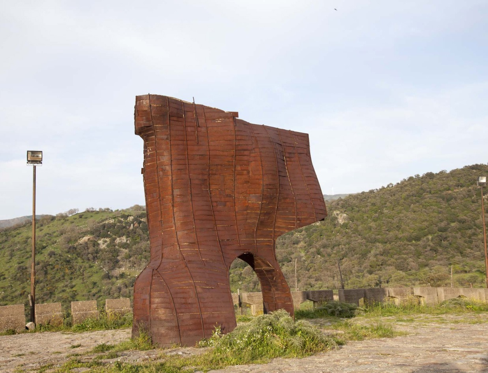

Una curva gettata alle spalle del tempo
Scopri l'artista
Sulla strada provinciale che unisce Castel di Lucio a Pettineo, si staglia un monolite di cemento coperto da fasce di ferro, alto 7 metri e mezzo per 6 metri e mezzo di larghezza Paolo Schiavocampo (1924) fù allievo di Giacomo Manzù e, anche lui come Consagra, firmatario del manifesto di Forma1, dal cui stile si discostò presto. La sua visione plastica risponde all’idea di spazio come campo di forze simultanee e ricerca di movimenti che, negli anni Settanta, esprimono la natura instabile della forma. Durante la recente campagna di restauro la scultura fu accolta in una struttura dello stesso materiale che la nasconde e la accoglie in uno spazio sinuoso, in cui il rapporto del visitatore con l’opera diventa più intimo.
L’opera è un sitespecific, legata quindi al luogo in cui è collocata: si tratta di un tornante che fa da incrocio tra la nuova strada provinciale, che va da Pettineo a Castel di Lucio, e la strada vecchia che passa per la campagna. La linea su cui si poggia vuol riprendere proprio la curva a gomito della strada… La parte superiore, come una vela battuta dal vento, indica il movimento: la forma reagisce al passaggio dalla tradizione, indicata dalla direzione della “vela”, che è verso la strada più datata, alla modernità della nuova via provinciale. Si configura nel territorio come un punto di riferimento che traduce in verticale sia fisicamente la curva di asfalto che la risposta ai cambiamenti , dettati dai tempi moderni che subisce il paesaggio, i quali provocano un’azione tale da plasmare la forma come fosse “mossa dal vento silenzioso che sale dal mare”.
Il 30 gennaio 1988, contemporaneamente all’inaugurazione della scultura di Schiavocampo, venne indetto un concorso per giovani scultori under40. Tutti i bozzetti furono in seguito portati a Roma dove, alla Galleria Giulia, fu allestita una mostra che destò grande curiosità e suscitò vivissimo interesse fra il numerosissimo pubblico e i critici, ma solo tre furono i progetti vincitori… La materia poteva non esserci è un’installazione dell’artista siciliano Pietro Consagra.
Realizzata nel 1986, su commissione di Antonio Presti, è stata la prima opera della Fiumara d’Arte ad essere stata inaugurata. Nata inizialmente come monumento commemorativo per la scomparsa del padre di Presti, questa installazione si è trasformata presto in qualcosa di più ampio, facendo di fatto nascere il progetto della Fiumara.